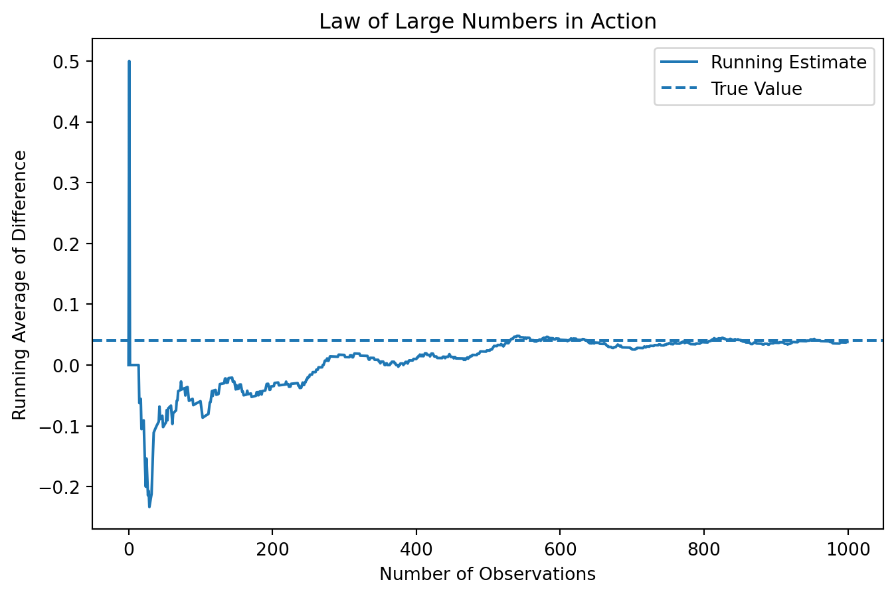
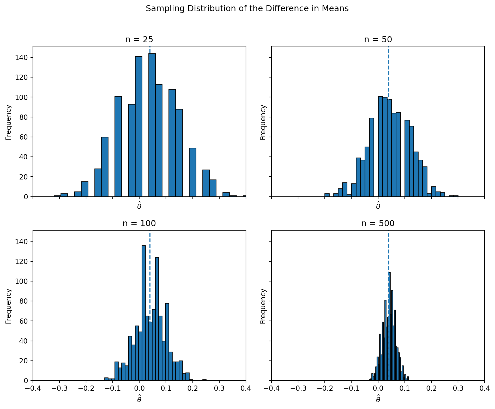

import numpy as np
# Set seed
np.random.seed(42)
# Parameters
n_A = 1000
n_B = 1000
pi_A = 0.22
pi_B = 0.18
# Simulate
A = np.random.binomial(1, pi_A, n_A)
B = np.random.binomial(1, pi_B, n_B)A/B Testing a Call to Action
Simulating Key Ideas from Classical Frequentist Statistics
Introduction
If you run a website, even small wording changes can affect how visitors respond. Imagine that my homepage includes a prompt inviting readers to subscribe to a newsletter. I want to know which wording is more effective at turning visitors into subscribers.
To study this, I compare two call-to-action messages. CTA A reads, “Sign up for our newsletter here!” and CTA B reads, “Stay up to date by signing up!” Both messages are trying to accomplish the same goal, but they may not be equally persuasive.
A natural way to evaluate the two options is with an A/B test. In an A/B test, visitors are randomly assigned to one of two groups, so each person sees only one version of the CTA. After enough visitors have been exposed to the two messages, I can compare the sign-up rates in the two groups. That comparison will let me estimate which CTA performs better and will provide a concrete example for exploring several core tools from classical frequentist statistics.
In practice, decisions like this are often made quickly, but even small improvements in conversion rates can have meaningful effects over time. This makes A/B testing a valuable tool for data-driven decision making.
The A/B Test as a Statistical Problem
To analyze this A/B test formally, we can translate the problem into a statistical framework. For each visitor, the outcome is binary: either they sign up for the newsletter or they do not. This means we can model each observation as a draw from a Bernoulli distribution, where the parameter represents the probability of signing up.
Because the call to action may influence behavior, we allow this probability to differ across groups. Let \(\pi_A\) denote the probability that a visitor signs up after seeing CTA A, and let \(\pi_B\) denote the corresponding probability for CTA B. For each visitor \(i\), we observe an outcome \(X_i \in \{0,1\}\), where 1 indicates a sign-up.
The quantity we ultimately care about is the difference in these probabilities: \[ \theta = \pi_A - \pi_B \] If \(\theta > 0\), CTA A performs better; if \(\theta < 0\), CTA B performs better.
In practice, we do not observe the true probabilities \(\pi_A\) and \(\pi_B\). Instead, we estimate them using sample averages. Since each observation is either 0 or 1, the sample mean in each group is simply the proportion of users who signed up. Let \(\bar{X}_A\) and \(\bar{X}_B\) denote the sample means for the two groups. Our estimator of \(\theta\) is therefore: \[ \hat{\theta} = \bar{X}_A - \bar{X}_B \]
This simple setup connects the A/B test directly to a core problem in statistics: estimating the difference between two population means and quantifying the uncertainty around that estimate.
Simulating Data
In a real A/B test, we would not know the true values of \(\pi_A\) and \(\pi_B\). We would only observe the outcomes in our sample and try to infer these probabilities. However, for the purpose of this exercise, it is useful to simulate data from a setting where we do know the truth. This allows us to study how our estimator behaves when the underlying parameters are known.
Suppose that the true sign-up probability for CTA A is \(\pi_A = 0.22\), while for CTA B it is \(\pi_B = 0.18\). The true difference is therefore \(\theta = 0.04\), meaning that CTA A is slightly more effective.
We now simulate data from these two Bernoulli distributions. Specifically, we generate 1,000 observations for each group. Each observation takes the value 1 if the visitor signs up and 0 otherwise. A sample size of 1,000 per group is large enough to clearly illustrate the statistical properties we are interested in, while still allowing us to observe randomness in the data.
The Law of Large Numbers
A key idea in statistics is the Law of Large Numbers (LLN), which states that as the sample size increases, the sample mean converges to the population mean. In other words, averages become more stable and more accurate when they are computed from larger samples.
In the context of our A/B test, this result gives us confidence in our estimator \(\hat{\theta} = \bar{X}_A - \bar{X}_B\). As we observe more visitors in each group, the difference in sample means should get closer to the true difference \(\theta = 0.04\).
To illustrate this idea, we examine how the running average of the difference evolves as we include more observations.
import numpy as np
import matplotlib.pyplot as plt
# Compute element-wise differences
diffs = A - B
# Compute cumulative (running) average
running_mean = np.cumsum(diffs) / np.arange(1, len(diffs) + 1)
The plot shows that when the number of observations is very small, the running average fluctuates dramatically. In the first few observations, the estimate jumps sharply, even reaching values far above and below the true difference. This reflects the high level of randomness when the sample size is small.
As more observations are included, the fluctuations begin to shrink, although the estimate still moves around noticeably in the early stages. After a few hundred observations, the running average becomes much more stable and starts to settle around the true value of 0.04.
By the time we approach 1,000 observations, the estimate is relatively stable and remains close to the true difference, with only small fluctuations. This pattern clearly illustrates the Law of Large Numbers: while individual observations are noisy, averaging over a large number of observations produces a reliable and stable estimate.
In the context of A/B testing, this highlights the importance of using sufficiently large sample sizes. Small samples can lead to highly misleading estimates, while larger samples provide much more dependable results.
Bootstrap Standard Errors
Now that we have seen that our estimator \(\hat{\theta}\) converges toward the true value as the sample size increases, the next natural question is: how precise is this estimate?
One way to answer this question is through the bootstrap. The bootstrap is a resampling method where we repeatedly draw new samples (with replacement) from our observed data, compute the statistic each time, and measure how much it varies.
import numpy as np
n_boot = 1000
boot_thetas = []
for _ in range(n_boot):
A_star = np.random.choice(A, size=len(A), replace=True)
B_star = np.random.choice(B, size=len(B), replace=True)
theta_star = np.mean(A_star) - np.mean(B_star)
boot_thetas.append(theta_star)
boot_thetas = np.array(boot_thetas)
bootstrap_se = np.std(boot_thetas)
bootstrap_se0.017650398749036806The bootstrap standard error measures how much our estimate varies across resamples.
We can compare this to the analytical standard error:
pi_A_hat = np.mean(A)
pi_B_hat = np.mean(B)
n_A = len(A)
n_B = len(B)
analytical_se = np.sqrt(
(pi_A_hat * (1 - pi_A_hat)) / n_A +
(pi_B_hat * (1 - pi_B_hat)) / n_B
)
analytical_se0.017766823013696063Now we construct a 95% confidence interval:
theta_hat = np.mean(A) - np.mean(B)
ci_lower = theta_hat - 1.96 * bootstrap_se
ci_upper = theta_hat + 1.96 * bootstrap_se
theta_hat, ci_lower, ci_upper(0.038000000000000006, 0.003405218451887869, 0.07259478154811214)This confidence interval gives a range of plausible values for the true difference in sign-up rates. In repeated samples, about 95% of such intervals would contain the true value of \(\theta\).
The two standard errors are typically very close, which provides reassurance that both the analytical formula and the bootstrap are capturing the same underlying variability in the estimator.
The Central Limit Theorem
Another key idea in classical frequentist statistics is the Central Limit Theorem (CLT). The CLT tells us that even when the underlying data are not Normally distributed, the sampling distribution of the sample mean becomes approximately Normal as the sample size grows. Because our estimator \(\hat{\theta} = \bar{X}_A - \bar{X}_B\) is the difference between two sample means, the same logic applies here.
To illustrate this, I repeatedly simulate A/B tests at different sample sizes and examine the distribution of the resulting estimates. If the CLT holds, the distribution of \(\hat{\theta}\) should look rougher and less regular for small samples, but become smoother and more bell-shaped as the sample size increases.
import numpy as np
import matplotlib.pyplot as plt
sample_sizes = [25, 50, 100, 500]
n_sim = 1000
theta_sims = {}
for n in sample_sizes:
estimates = []
for _ in range(n_sim):
A_sim = np.random.binomial(1, pi_A, n)
B_sim = np.random.binomial(1, pi_B, n)
theta_hat_sim = np.mean(A_sim) - np.mean(B_sim)
estimates.append(theta_hat_sim)
theta_sims[n] = np.array(estimates)
The histograms clearly illustrate the Central Limit Theorem in action. When the sample size is small (n = 25), the distribution of \(\hat{\theta}\) is relatively wide and somewhat irregular, with noticeable variability across simulations. The estimates are spread out and do not yet form a smooth, bell-shaped curve.
As the sample size increases to n = 50 and n = 100, the distribution becomes more concentrated around the true value of 0.04 and begins to take on a more symmetric shape. The variability decreases, and the histogram appears smoother.
By the time the sample size reaches n = 500, the distribution of \(\hat{\theta}\) is tightly concentrated and clearly resembles a Normal distribution centered near the true value. The spread of the estimates is much smaller, indicating increased precision.
This progression demonstrates the key insight of the Central Limit Theorem: even though the underlying data are Bernoulli, the sampling distribution of the estimator becomes approximately Normal as the sample size grows. This is what justifies the use of Normal-based inference, such as confidence intervals and hypothesis tests, in A/B testing.
Hypothesis Testing
Now that we have seen that the sampling distribution of \(\hat{\theta}\) is approximately Normal for large samples, we can use this result to perform a formal hypothesis test.
A hypothesis test allows us to assess whether the data provide enough evidence to reject a null hypothesis. In this case, we consider the null hypothesis \(H_0: \theta = 0\), which states that the two CTAs have the same sign-up rate. The alternative hypothesis is \(H_1: \theta \neq 0\), meaning that the two CTAs perform differently.
To carry out the test, we standardize our estimate to form a test statistic:
\[ z = \frac{\hat{\theta} - 0}{SE(\hat{\theta})} \]
The logic behind this standardization is as follows. By the Central Limit Theorem, \(\hat{\theta}\) is approximately Normally distributed when the sample size is large. Under the null hypothesis, the mean of this distribution is 0. Dividing by the standard error rescales the statistic so that it approximately follows a standard Normal distribution, \(N(0,1)\). This allows us to compute a p-value.
from scipy.stats import norm
import numpy as np
# point estimate
theta_hat = np.mean(A) - np.mean(B)
# standard error (analytical)
pi_A_hat = np.mean(A)
pi_B_hat = np.mean(B)
n_A = len(A)
n_B = len(B)
se = np.sqrt(
(pi_A_hat * (1 - pi_A_hat)) / n_A +
(pi_B_hat * (1 - pi_B_hat)) / n_B
)
# z statistic
z = theta_hat / se
# two-sided p-value
p_value = 2 * (1 - norm.cdf(abs(z)))
z, p_value(2.1388179513414762, 0.032450415036087366)The resulting p-value tells us how likely it would be to observe a difference as extreme as \(\hat{\theta}\) if the true difference were actually zero. A small p-value provides evidence against the null hypothesis.
In large samples, this procedure is often referred to as a “t-test,” even though the test statistic is approximately Normal rather than exactly t-distributed. The classical t-test assumes Normally distributed data and uses an exact t-distribution when the variance is unknown. In our case, the data are Bernoulli, and we rely on the Central Limit Theorem for approximate Normality. In practice, for large samples, the Normal and t distributions are very similar, so this distinction has little impact on the result.
Based on the computed p-value, we can decide whether there is statistically significant evidence that the two CTAs have different sign-up rates. If the p-value is less than 0.05, we would reject the null hypothesis and conclude that the difference is statistically significant. Otherwise, we would not have sufficient evidence to reject the null.
In this context, a statistically significant result would suggest that the wording of the CTA has a measurable impact on user behavior, while a non-significant result would indicate that any observed difference could plausibly be due to random variation.
The T-Test as a Regression
The two-sample test we just performed can also be expressed as a simple linear regression. This connection is useful because it shows that hypothesis testing can be carried out within the familiar regression framework, and it extends naturally to more complex settings.
To see this, we combine the data from the two groups into a single dataset. For each observation, we define an outcome variable \(Y_i\) that equals 1 if the visitor signed up and 0 otherwise, and an indicator variable \(D_i\) that equals 1 if the visitor saw CTA A and 0 if they saw CTA B.
We then estimate the following regression model:
\[ Y_i = \beta_0 + \beta_1 D_i + \varepsilon_i \]
The coefficients in this model have a clear interpretation. When \(D_i = 0\) (the B group), the expected value of \(Y_i\) is \(\beta_0\), which corresponds to the mean sign-up rate for CTA B. When \(D_i = 1\) (the A group), the expected value is \(\beta_0 + \beta_1\), which corresponds to the mean sign-up rate for CTA A. Therefore, \(\beta_1 = \pi_A - \pi_B = \theta\), and the OLS estimate \(\hat{\beta}_1\) is exactly the same as \(\hat{\theta}\).
import pandas as pd
import statsmodels.api as sm
import numpy as np
# Create dataset
Y = np.concatenate([A, B])
D = np.concatenate([np.ones(len(A)), np.zeros(len(B))])
df_reg = pd.DataFrame({"Y": Y, "D": D})
# Add intercept
X = sm.add_constant(df_reg["D"])
# Fit regression
model = sm.OLS(df_reg["Y"], X).fit()
coef = model.params["D"]
se = model.bse["D"]
pval = model.pvalues["D"]
coef, se, pval(0.03800000000000006, 0.017775713093318598, 0.032658217620368496)The estimated treatment effect is given by the coefficient on D. It is close to the difference in sample means computed earlier, with a similar standard error and p-value, confirming the equivalence between the regression approach and the two-sample test.
This equivalence is important because it shows that A/B testing can be viewed as a special case of regression analysis. In more complex settings, we can easily extend this framework by adding control variables, interaction terms, or multiple treatment groups, all while using the same underlying tools for estimation and inference.
The Problem with Peeking
In practice, experiments are not always run exactly as planned. Suppose that instead of waiting until all 1,000 visitors in each group have been observed, we repeatedly check the results as the data come in. For example, after every 100 observations per group, we run a hypothesis test and stop the experiment early if we find a statistically significant result at the 5% level.
At first glance, this may seem reasonable. However, this practice—often called “peeking”—creates a serious problem in classical frequentist statistics. A single hypothesis test conducted at the \(\alpha = 0.05\) level has a 5% chance of producing a false positive when the null hypothesis is true. But if we repeatedly test the data as it accumulates, each test provides another opportunity for a false positive. As a result, the overall probability of incorrectly rejecting the null hypothesis increases substantially.
To demonstrate this, we simulate a setting in which the null hypothesis is true. Specifically, we assume that both CTAs have the same sign-up probability, \(\pi_A = \pi_B = 0.20\), so that \(\theta = 0\).
import numpy as np
from scipy.stats import norm
np.random.seed(42)
n_exp = 10000
n_total = 1000
step = 100
false_positive_count = 0for _ in range(n_exp):
A_sim = np.random.binomial(1, 0.20, n_total)
B_sim = np.random.binomial(1, 0.20, n_total)
found_significant = False
for n in range(step, n_total + 1, step):
A_sub = A_sim[:n]
B_sub = B_sim[:n]
theta_hat = np.mean(A_sub) - np.mean(B_sub)
pi_A_hat = np.mean(A_sub)
pi_B_hat = np.mean(B_sub)
se = np.sqrt(
(pi_A_hat * (1 - pi_A_hat)) / n +
(pi_B_hat * (1 - pi_B_hat)) / n
)
z = theta_hat / se
p_value = 2 * (1 - norm.cdf(abs(z)))
if p_value < 0.05:
found_significant = True
break
if found_significant:
false_positive_count += 1
false_positive_rate = false_positive_count / n_exp
false_positive_rate0.1864The result shows the proportion of experiments in which at least one of the repeated tests produced a statistically significant result, even though the null hypothesis was true. This empirical false positive rate is typically much higher than the nominal 5% level associated with a single test.
This example highlights why peeking is problematic. Repeated testing inflates the probability of Type I errors, leading to a higher chance of falsely declaring a difference when none exists. In practice, this means that stopping an experiment early based on repeated checks can produce misleading conclusions.
To avoid this issue, analysts must either commit to a fixed sample size in advance or use statistical methods specifically designed for sequential testing.